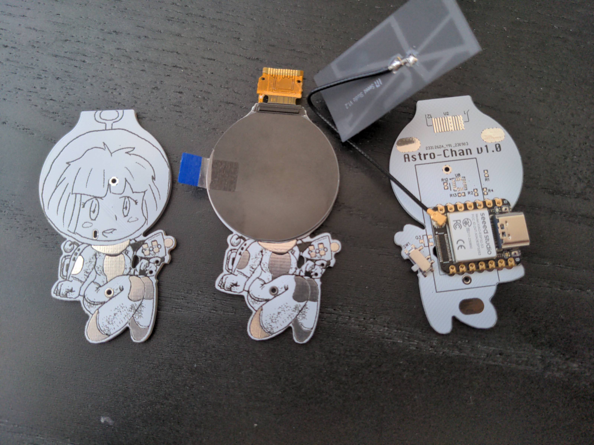
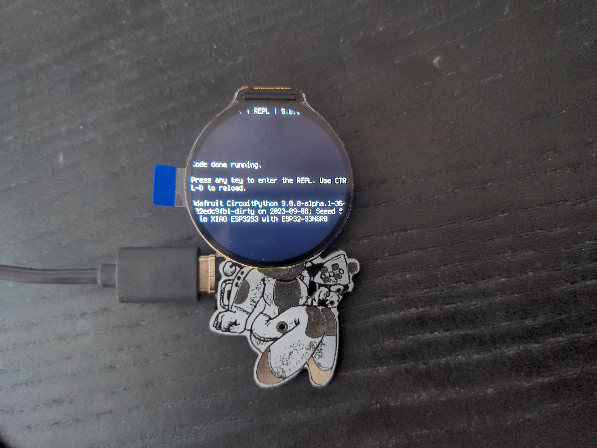
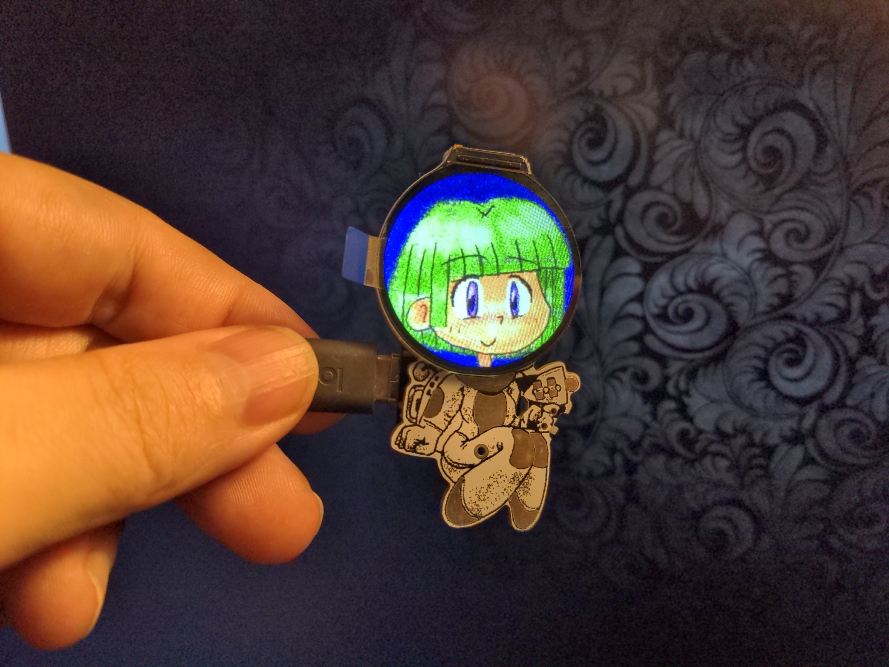
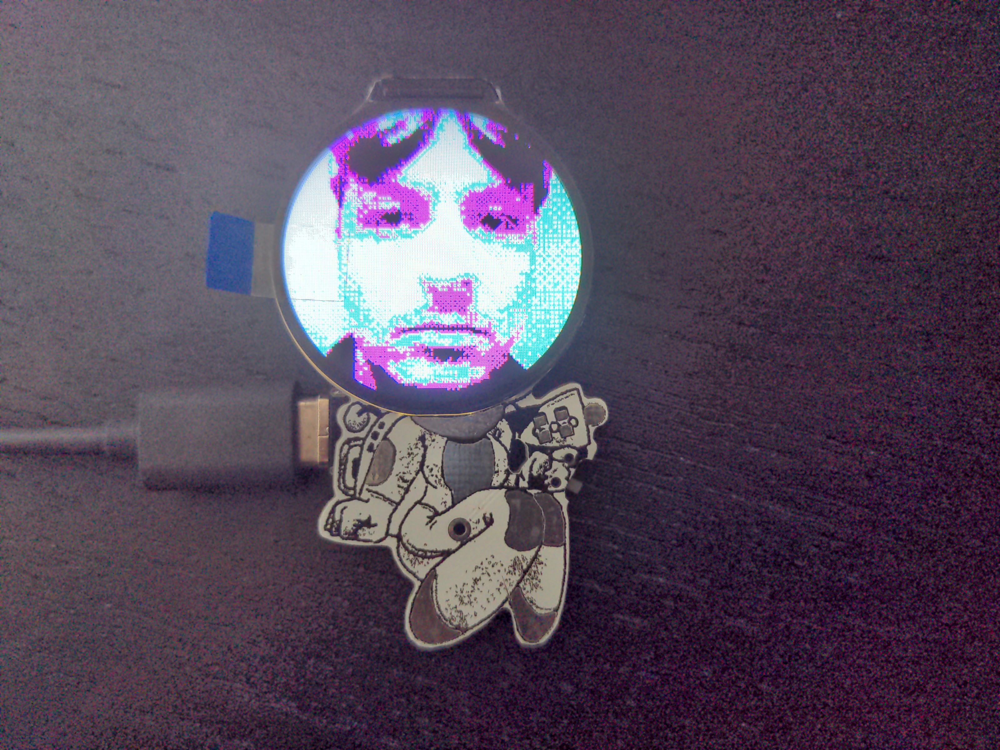

Assembly¶
Published on 2023-09-12 in Astro-chan Badge.
The boards arrived today, and I assembled one. Well, partially, since I don’t have the resistors for the I2C pullups on the accelerometer yet, and the battery holders should arrive tomorrow…
I got the display working with CircuitPython.
Then I went ahead and used the gifio module for directly displaying animated gifs on the display. I think I need to simplify the graphics a bit if I want to be able to produce several matching animations for the different accelerometer movements, but I’m getting close.
Of course you could also just put your avatar on the display and call it a day, maybe add some rotation for accelerometer reactions…
